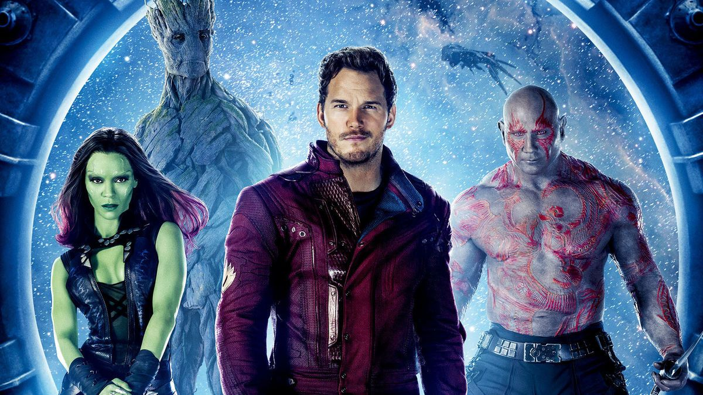

Los 4 fantasticos

Reed Richards, Ben Grimm, Susan Storm y su hermano, Johnny Storm, cambiaron para siempre durante un vuelo espacial experimental que los expuso a los rayos cósmicos, lo que les dio poderes y habilidades sobrehumanos. A raíz de su increíble
viaje, los cuatro se comprometieron a permanecer juntos como un equipo. Rápidamente se convirtieron en sensaciones mediáticas, y su estatus de celebridad sólo creció a medida que exploraban las regiones inexploradas del universo y enfrentaban
el mal donde lo encontraban. Pero los Cuatro Fantásticos son más que simples Superhéroes, son la primera familia del Universo Marvel.
Los guardianes de la galaxia

Los Guardianes de la Galaxia son una banda de forajidos intergalácticos, que se unieron para proteger la galaxia de las amenazas interplanetarias, bajo el mando de Peter Quill. Ellos se conocieron en la prisión Kyln, del cual escaparon para
venderle el Orbe a Taneleer Tivan. No obstante, al darse cuenta que este contenía la Gema del Poder, optaron por defender Xandar de Ronan, ganándose el reconocimiento del Imperio Nova, quienes los recompensaron borrando sus antecedentes
criminales. A partir de ese momento, los Guardianes cobraron por sus servicios para ayudar a otras civilizaciones.
Hulk
Robert Bruce Banner (hulk) era un científico que trabajaba en una bomba de radiación Gamma para el ejercito estadounidense. Entonces, Bruce se dió cuenta de que un joven llamado Rick Jones había entrado al campo de pruebas. Banner salió corriendo
para salvar al muchacho y heroicamente lo empujó a una zanja de protección que le salvó la vida a Rick, pero Bruce quedó expuesto a cantidades extremas de radiación Gamma que alteraron la estructura de su ADN. Cuando Bruce se enojaba,
éste se transformaba en una criatura de color verde (a veces gris) con poderes increíbles que aumentaban su capacidad fisica al que le apodaron Hulk. Su interés amoroso, Betty Ross, parecía ser la única persona que podía volverlo a la
normalidad, pero ella era la hija del General Thunderbolt Ross, quien busca la manera de detener a Hulk, con la esperanza de entregarlo a la justicia o destruirlo por completo. Debido a eso, Bruce siempre busca la cura para su transformación
y mantener la calma lo más que pueda. Es una de las criaturas más poderosas que existe, y la más fuerte.